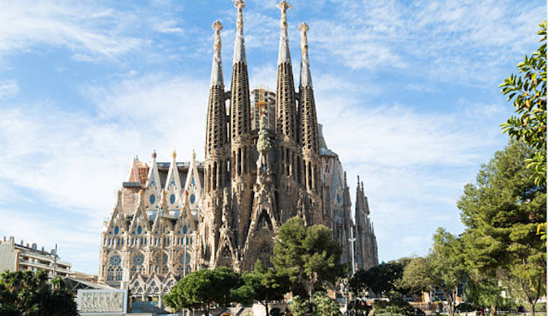
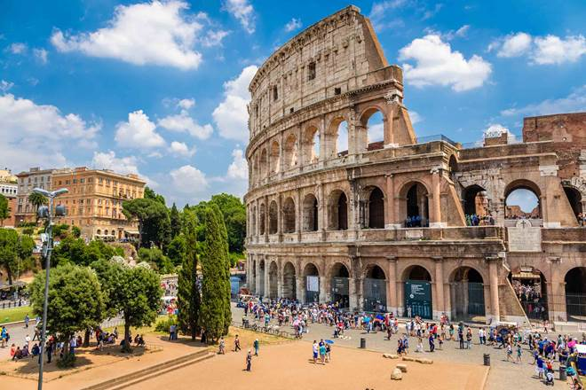
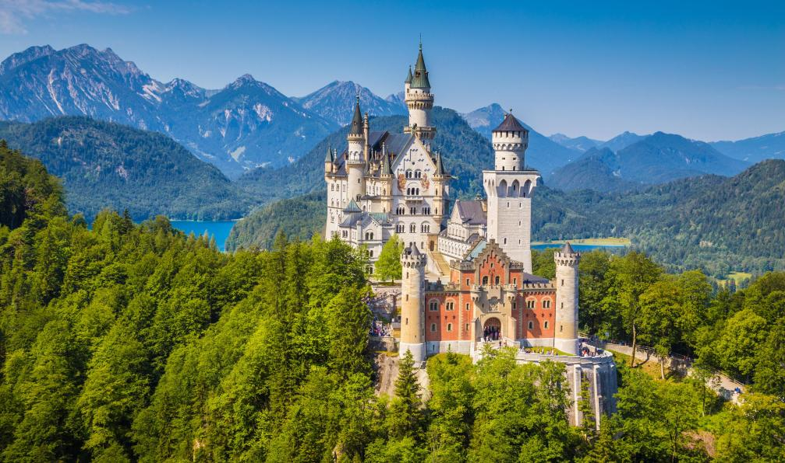

Explorez les pays d'Europe et leurs lieux incontournables

France
Tour Eiffel
Musée du Louvre
Mont Saint-Michel
Château de Versailles
Côte d'Azur
Château de Chambord
Cathédrale Notre-Dame de Paris
Gorges du Verdon
Dune du Pilat
Parc National des Calanques

Espagne
La Sagrada Família
Alhambra
Parc Güell
La Mezquita
Musée du Prado
Îles Baléares
Plaza Mayor
Caminito del Rey
Cathédrale de Séville et la Giralda
La Cité des Arts et des Sciences

Italie
Colisée
Vatican et Basilique Saint-Pierre
Canaux de Venise
La Tour de Pise
Florence et ses musées
Cinque Terre
Lac de Côme
Vésuve et Pompéi
Côte Amalfitaine
Vérone

Allemagne
La Porte de Brandebourg
Le château de Neuschwanstein
La cathédrale de Cologne
La Forêt-Noire
Le mur de Berlin
Miniatur Wunderland
La vallée du Rhin
L'Île aux musées
Le Zugspitze
Le parc national de la Suisse saxonne